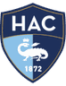

Статистика матча
Последнее место, 2 очка (0 побед в 8 турах)
1-е место, 17 очков
ПСЖ выиграл 5 из 6 последних очных встреч, одна ничья (3:3 в 2024 году). Последний матч — 1:0 в пользу ПСЖ в Гавре в феврале 2026 года.
ПСЖ выиграл пять матчей подряд, включая 4:2 у Барселоны и 4:2 у Манчестер Сити.
Форма — последние матчи, самый свежий справа. В — победа, Н — ничья, П — поражение.
Разбор матча
Лидер Лиги 1 с пятью победами подряд против последней команды без побед. ПСЖ выиграл пять из шести последних встреч с Гавром.
Парижане недавно забили по четыре мяча Барселоне и Манчестер Сити, а Гавр пропускает почти в каждом матче. Главный риск — ротация из-за Лиги чемпионов. Фора −1.5 за 1.71 даёт перевес при нашей оценке около 60%.
Прогноз на матч Гавр — ПСЖ: форма команд
ПСЖ возглавляет Лигу 1 с 17 очками после восьми туров (5 побед, 2 ничьи, 1 поражение, мячи 16:9) и находится в отличной форме: пять побед подряд во всех турнирах. Парижане обыграли Ле-Ман 3:1, на выезде разгромили Манчестер Сити 4:2, затем выиграли у Страсбура 3:1, у Барселоны 4:2 и у Лиона 2:0. Команда регулярно забивает по три-четыре мяча даже сильным соперникам.
Гавр — последний в таблице с двумя очками и без единой победы после восьми туров (2 ничьи, 6 поражений, мячи 8:15). Последние результаты: 1:2 от Бреста, 0:0 с Анже, 2:3 в Тулузе, 0:1 в Лилле, 1:3 от Осера и 3:4 в Марселе. Команда пропускает почти в каждом матче и редко держит счёт против сильных соперников.
Составы и потери
Найденные источники не сообщают о кадровых проблемах у команд перед этим матчем. Основной риск для ставки на крупную победу ПСЖ — ротация: у парижан плотный график из-за Лиги чемпионов, и часть лидеров может начать матч на скамейке. Однако даже резервный состав ПСЖ по классу заметно сильнее аутсайдера.
Очные встречи Гавра и ПСЖ
ПСЖ выиграл пять из шести последних очных встреч, ещё одна завершилась ничьей 3:3 в апреле 2024 года. Парижане дважды побеждали в Гавре 4:1, дома выиграли 3:0 и 2:1, а в феврале 2026 года взяли верх на выезде 1:0. В этих шести матчах ПСЖ забил 17 мячей.
Мотивация и тактика
ПСЖ нужно сохранить первое место, а Гавру — хоть как-то начать набирать очки. Хозяева, скорее всего, будут обороняться низким блоком, но их оборона в этом сезоне не выдерживает давления: даже в Марселе команда пропустила четыре. При счёте 0:1 Гавру придётся атаковать, и это откроет пространство для быстрых контратак парижан.
Варианты ставок: кто победит
На победу ПСЖ букмекеры дают 1.25–1.26, на ничью — около 7.30, на победу Гавра — 11.00–11.50. Фора ПСЖ (−1.5), то есть победа с разницей в два мяча и больше, стоит 1.71 (Winline). Тотал больше 3.5 — 1.90. Мы оцениваем шанс победы ПСЖ с разницей в два мяча и более примерно в 60%.
- Основная ставка: фора ПСЖ (−1.5) за 1.71
- Альтернатива: тотал больше 3.5 — 1.90
Почему ставка на фору даёт перевес
Коэффициент 1.71 соответствует вероятности около 56% с учётом маржи, наша оценка — около 60%. Простая победа ПСЖ за 1.25 почти не даёт перевеса, а вот фора −1.5 лучше отражает разницу в классе: Гавр в этом сезоне проиграл шесть матчей из восьми, а парижане в пяти последних играх каждый раз забивали минимум два мяча. Главный риск — минимальная победа 1:0 или 2:1, как в последнем визите ПСЖ в Гавр. Если перед матчем станет известно о массовой ротации в составе гостей, лучше ограничиться ставкой на простую победу ПСЖ или тотал больше 2.5.
Итог
Наш прогноз на матч Гавр — ПСЖ — уверенная победа гостей с разницей минимум в два мяча. Лидер в лучшей форме сезона против аутсайдера без побед, а история очных встреч подтверждает, что ПСЖ обычно не мелочится в Гавре. Главный риск — ротация, поэтому уверенность средняя.
Вопросы о матче
Кто победит в матче Гавр — ПСЖ?
ПСЖ — подавляющий фаворит (около 1.25). Мы ставим на победу парижан с разницей в два мяча и больше — фора −1.5 за 1.71.
Сколько голов забьёт ПСЖ в Гавре?
Мы ждём от ПСЖ минимум двух голов: в шести последних очных встречах парижане забили 17 мячей.
Сколько очков у Гавра в Лиге 1?
После восьми туров у Гавра два очка и ни одной победы — последнее место.
Когда матч Гавр — ПСЖ?
Игра 9-го тура Лиги 1 пройдёт 30 октября, начало в 21:00 по Москве.
Прогноз — оценка вероятности исхода, а не гарантия результата.